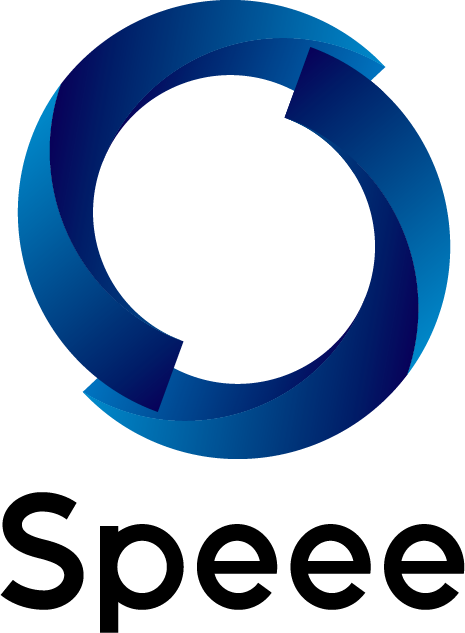

TokyuRuby会議14
(
tokyurubykaigi14
,
#tqrk14
)
LT への応募
- 発表者の募集は終了しました。多数のご応募、ありがとうございました！
- LTの持ち時間は5分です。
- 発表内容の記入が無い方は選考対象外となりますので、ご了承ください。
- 資料は16:9での作成をお願いします。
参加登録
- こちら(connpass)からご登録下さい。
TokyuRuby会議について
- TokyuRuby会議は、東京で開催される Regional RubyKaigi です。
- Ruby に興味を持つエンジニアが集う Tokyu.rb 主催の LT 大会です。
- 飲み食いしつつ、みんなでLTをして盛り上がろうというイベントです。
- 抽選LTを実施予定です！ 抽選LT発表者の指名は抽選により、当日会場にて行います！当たるかもしれません！
- 今回も参加者のみなさんの投票により飯王、LT王を決定します！
開催日時
- 2023年07月29日(土曜日)午後を予定しております。
会場
- 株式会社Speee様
- 〒106-0032 東京都港区六本木3-2-1 六本木グランドタワー 39階
参加費
- 参加費は 無料 です
座席について
- 前回と同じく、ブルーシートの上に座る形となる予定です。簡単な座布団などお持ち頂けると快適です。
飲み物、食べ物について
- 参加者・登壇者ともに、食べ物/飲み物は持ち込み形式となります。（忘れると悲しいことになります）
- スタッフへのカンパもお待ち致しております。皆様の善意により成り立っております🙏
Q & A
- Q. お酒は持ち込んでいいの？
- A. 歓迎です。
- Q. 何を持ち込んだらいいの？
- A. 買ってくる場合は自分が食べたいものを。なにか作られる方は、他の参加者の方に自慢したい品をお持ち下さい。
- Q. どれくらい持ち込んだらいいの？
- A. 自分が食べたい量の1〜2人分お持ち頂くと幸せになれます。自慢の料理を振る舞いたい方は、好きなだけお持ち下さい。
その他
会場設備について
- 未定
タグなど
- 公式タグ
- tokyurubykaigi14 (TokyuRuby会議14として)
- Twitter のハッシュタグ
スケジュール
(イベントの性質上、進行状況により時間が前後する場合がございます。ご了承下さい）
| 13:30 | 開場 | |
|---|---|---|
| 14:00 〜 15:30 | ライトニングトーク第一部 | |
| @ginkouno (Tokyu.rb) | 進行に関するご案内 | |
| 会場スポンサー 株式会社Speee様 |
会場に関するご案内 | |
| 会場スポンサー 株式会社Speee様 |
スポンサーセッション | |
| スポンサー メドピア株式会社様 |
スポンサーセッション | |
| スポンサー 株式会社ディー・エヌ・エー様 |
スポンサーセッション | |
| @yukaina (Tokyu.rb) | レギュレーションと投票方法のご説明 | |
| 川村 徹 (@tkawa) | HotwireとREST | |
| fukajun | 自作のなにかについて | |
| machida | TokyuRuby会議 14のグッズ、Tokyu.rbのロゴのデザインの話 | |
| yasulab | OSS入門としてのRailsガイド (2023年度版) | |
| arihh | Rubyにまつわるトリビアの紹介 | |
| willnet | mrskで広がるインフラの選択肢 | |
| Haruna Tsujita | 正規表現だけでAppleの絵文字と完全にマッチさせたい(?!) | |
| sue445 | rubicure 10th Anniversary | |
| 小宮 健 (@tk0miya) | 型を書かない型の導入のすすめ | |
| 15:30 〜 15:45 | 抽選LT抽選/休憩 | |
| 15:45 〜 17:15 | ライトニングトーク第二部 | |
| ただあき | いろいろふらふらして4年ぶりにプログラミングでお仕事してます | |
| 大倉雅史 | 5 | |
| yancya | BigQueryのSQLからRubyを実行するぞ | |
| joker1007 | RubyからJavaへ -帝国の逆襲- | |
| 牟田真以 | 自作サービスのリリース表裏 | |
| tagomoris | Namespaceというやつについて考える | |
| harukasan | TokyuRubyKaigiで発表して8年8ヶ月経ってどうなったか | |
| ima1zumi | RubyKaigi 2023のまとめを160回くらい更新して350件以上の記事を読んだ感想 | |
| えりりん | コミュニティにおける手段と目的について | |
| Shohei Mitani | 本番環境のRailsでYJITをONにしてみた結果 | |
| 抽選LT | 抽選LT (LT本数は当日の進行具合で決定します) | |
| 17:15 〜 17:30 | 休憩 | |
| 17:30 〜 18:30 | ライトニングトーク第三部 | |
| thehighhigh | Google Driveのsortを完全再現するGemを作った話 | |
| ledsun（中島滋） | ruby.wasmでアプリケーション書いたからみてくれよ | |
| 富岡真悟 | モデルの説明コメントを書く文化が会社に浸透してきた話 | |
| haruguchi | Rubyメソッドかるたの作り方 | |
| kwappa | After Partyのつくりかた（仮） | |
| 堀川豊 | Ractorを使ってみた感想 | |
| 小林悟史(noel) | Ruby/Railsと他言語フレームワークを組み合わせてプロダクトを作った/作ってる話 | |
| Shu Oogawara (@expajp) | 「道具の7番目でセレクト」の裏側 | |
| 18:30 〜 19:00 | 基調講演投票・登壇者発表・休憩 | |
| 19:00 〜 19:30 | 基調講演 | |
| 19:30 | 閉会の一本締め | |
前回の様子
RegionalRubyKaigi レポート (74) TokyuRuby会議13 レポート
スタッフ
運営チーム
- 実行委員長：河野誠
- 会計：小田切わか菜
- るびま記事担当：小椋隆史
- 大場光一郎
- 小川伸一郎
- 関学
- 多田亜希
- 三浦美咲樹
当日スタッフ
- 影山勝彦
- Masaya Kawamura
- Risa Okutani
- shokola
- u1tnk
- yuma
Sponsors
会場スポンサー 株式会社Speee様

Tシャツ / グッズデザイン フィヨルドブートキャンプ @machidaさん
スポンサー メドピア株式会社様
スポンサー 株式会社ディー・エヌ・エー様
esaスポンサー esa LLC様
TokyuRuby会議14グッズについて
SUZURIにて販売しております！アンチハラスメントポリシーについて
TokyuRuby会議では、アンチハラスメントポリシーを定めています。イベントに参加する皆様は、以下のリンク先に書かれたポリシーを遵守するように心がけてください。非常時のアナウンスについて
もし当日に極度の荒天などの非常事態が起こった場合は、Twitterアカウント @tokyurb または Twitterハッシュタグ #tqrk14 に開催予定などの速報を流します。適宜ご確認をお願いいたします。
お問い合わせ
TokyuRuby会議14に関するお問い合わせは、tokyurubykaigi_at_googlegroups.comまでメールにてご連絡ください。